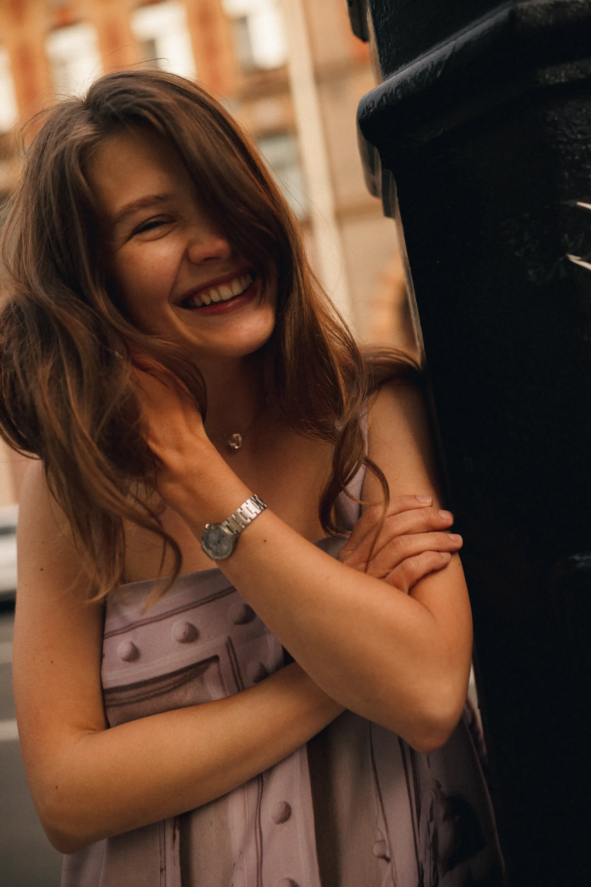
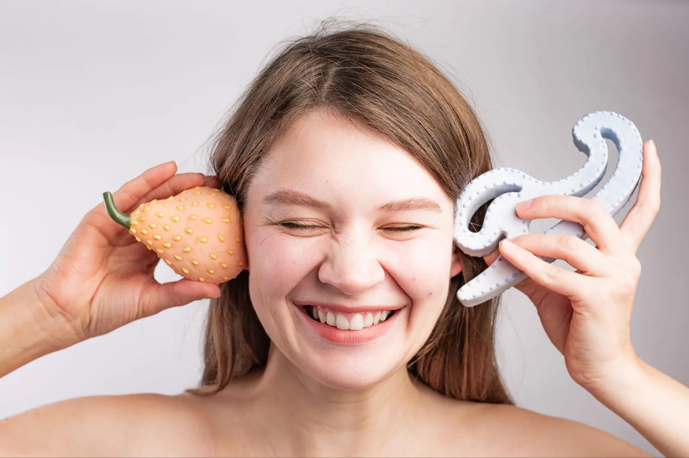
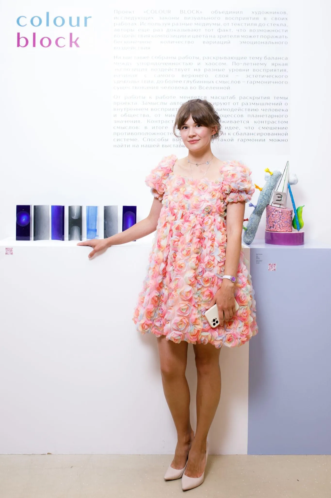
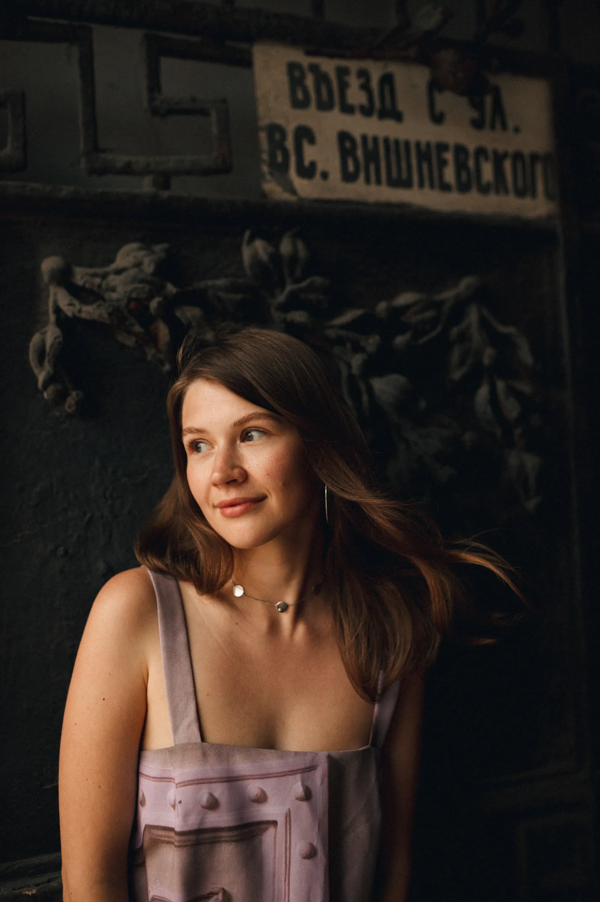
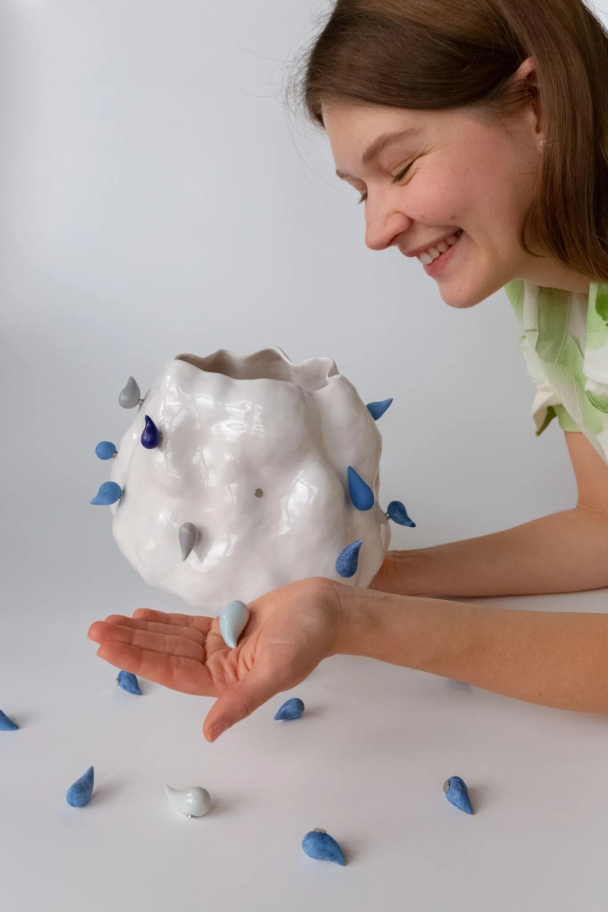
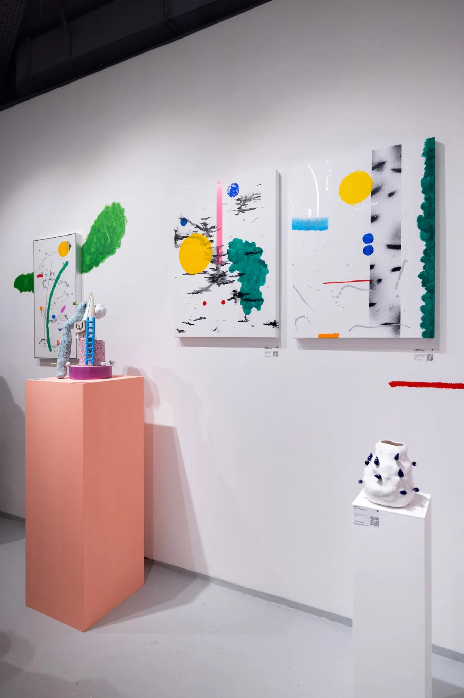

Ольга Симонова
Ольга Симонова (sim.play.art) — независимая художница-керамист из Санкт-Петербурга. Родилась в 1994 году в Пскове. Работает с глиной, глазурью и магнитами: создаёт открытые, гибкие конструкции и визуальные системы, в которых материал, автор и зритель становятся соавторами.
В 2012 году поступила в Санкт-Петербургский государственный университет промышленных технологий и дизайна на факультет графического дизайна, в 2014 году — в Санкт-Петербургскую государственную художественно-промышленную академию им. А. Л. Штиглица на кафедру художественной керамики и стекла. В 2019 году купила печь и открыла собственную мастерскую. Прошла резиденции ART BOOST (2022) и Clay (2023) в GetArtFit, гипсомодельную мастерскую FireClay и глазурный курс ART GLAZE.
С 2023 года развивает проект PLAY — серию керамических «пирамид», которые собираются на магнитах. Работы выставлялись в Русском музее, Cube.Moscow, ЦСИ «Быль», Taoxichuan Art Center (Китай), на ярмарках Port Art Fair и Third Art Fair. Лауреат выставки «Colour Block» в галерее Art Brut (1 место, 2023), ART FAIR 2023 и Third Art Fair 2024 (3 место). Сотрудничает с галереями SAMPLE, EGGZ, Postrigay Gallery, брендом IRNBY, рестораном ВОВО и фотоателье «UU».

В своей практике я исследую игру не как тему, а как метод. Игра здесь — не про детство, а возможность пересобрать рутину, наделить привычное новым смыслом и включить зрителя в процесс.
Последние годы моя практика сосредоточена на работе с керамикой. В работе с глиной я создаю открытые и гибкие конструкции и визуальные системы, в которых материал, автор и зритель становятся соавторами.
В начале я создаю коллекцию из повседневных вещей, окружающих меня. Затем переношу их в эскиз на бумаге или в объёме. Отрисовываю композицию, где каждая деталь будет сделана вручную. Создаю поэтапно отдельные элементы, которые с помощью магнитов можно соединять, вращать и менять местами. Я уделяю большое внимание деталям: копирую их в материале, отливаю в гипсовую форму, расписываю, экспериментирую с цветом, прорабатываю фактуру. Повторение форм становится инструментом — через него я создаю структуру, как в игре: правила просты, но вариаций бесконечно много!
Игра в моих проектах — это способ по-другому увидеть настоящее!
Образование
- 2014 —СПГХПА им. А. Л. Штиглица, кафедра художественной керамики и стекла, Санкт-Петербург
- 2012–2014СПбГУПТД, факультет графического дизайна, Санкт-Петербург
Дополнительное образование
- 2025Курс Money Talk 2.0, GetArtFit
- 2024Глазурный курс ART GLAZE (Анна Сологубова)
- 2024Курс Money Talk, GetArtFit
- 2023Clay-резиденция, GetArtFit
- 2022Резиденция ART BOOST, GetArtFit
- 2022Гипсомодельная мастерская FireClay
Награды
- 2024Third Art Fair — 3 место, Санкт-Петербург
- 2023ART FAIR — 3 место, Санкт-Петербург
- 2023«Colour Block» — 1 место, галерея Art Brut, Москва
Проекты
- 2026Art Flash × фонд «Вера» × благотворительный вечер Edgers
- 2025Коллаборация с рестораном ВОВО, сет Signature XV
- 2025Проект для фотоателье «UU», Москва
- 2024Проект «Лёгкий ужин» с Nataliia Leskova, Санкт-Петербург
Сотрудничество
SAMPLE, EGGZ Gallery, Postrigay Gallery, IRNBY, Bulthaup Design Gallery, 573 Gallery
Выставки и ярмарки
- 2026«Играть можно», выставка-дуэт
Cube.Moscow, Москва - 2026«Игры, в которые играют люди»
Русский музей, Санкт-Петербург - 2026Spring Art Fair «All paths One place»
Taoxichuan Art Center, Китай - 2026«Переменная облачность»
Culture, Ростов-на-Дону - 2026Выставка премии Art De Vivre × GetArtFit
Санкт-Петербург - 2026«Нереальное/реальное»
галерея EGGZ × Маяковка - 2026Ярмарка BLAZAR
с галереей SAMPLE - 2025«Стекольная сессия на Елагином острове»
Санкт-Петербург - 2025Catalog
Москва - 2025«Назад к материи»
ЦСИ «Быль», Старый Оскол - 2025Third Art Fair
Санкт-Петербург - 2025573 Gallery
Санкт-Петербург - 2025Фестиваль «Кабинет редкостей»
Bulthaup Design Gallery и галерея «Сегодня Завтра», Санкт-Петербург - 2025Port Art Fair
Санкт-Петербург - 2025TRAF
Санкт-Петербург - 2024Выставка коллекционного дизайна
галерея «Сегодня Завтра», Санкт-Петербург - 2024Third Art Fair3 место
Санкт-Петербург - 2024Port Art Fair
Санкт-Петербург - 2023«Игры и игрушки», куратор Татьяна Пунанс
Экспоцентр, Москва - 2023«Две столицы в современном искусстве»
ЦГПБ им. В. В. Маяковского, Санкт-Петербург - 2023ART FAIR3 место
Санкт-Петербург - 2023«Colour Block»1 место
галерея Art Brut, Москва - 2022Фестиваль «Стекло и керамика в ландшафте»
ЦПКиО им. Кирова, Санкт-Петербург
Фотографии
Портреты и фото работ можно использовать в публикациях с подписью «Ольга Симонова / sim.play.art». Фото в высоком разрешении — по запросу в Telegram.





